0
Inspiration: World Models
Related work
| Work | What it does |
|---|---|
| World Models (Ha & Schmidhuber, 2018) | Agents plan inside learned generative models of their environment. |
| NVIDIA Cosmos (2025) | World foundation models for physical AI. 20M hours of robot and driving video. |
| Genie 2 (DeepMind, 2024) | Generative world model that creates interactive 3D environments from a single image. |
| Decart Oasis (2024) | Real time interactive video generation. Playable AI generated worlds, frame by frame. |
| Diffusion Forcing (Chen, 2024) | Diffusion sequence prediction with mixed conditioning for coherent long horizon rollouts. |
Hypothesis
A learned generative prior helps only when (1) training distribution matches deployment, (2) the step budget is tight, and (3) inference is fast enough to drive.
2
Our System
Step 1
Partial map
From accumulated lidar scans
→
Step 2
U-Net (DDIM)
Conditional diffusion, 30 steps
→
Step 3
K = 8 imagined buildings
Plausible completions
→
Step 4
Score frontiers
E[gain] + λ·Std − β·dist
→
Step 5
Drive to argmax
Move, sense, repeat
The loop closes after Step 5: the robot drives, gathers a new lidar scan, and the cycle restarts at Step 1.
01
Data
HouseExpo: 35,126 floor plans. 2.66M training pairs after augmentation.
02
Model
Conditional U-Net, 4.16M params. DDPM, MSE on noise. 29 epochs on T4.
03
Scoring
K = 8 DDIM completions. Score = E[gain] + λ·Std[gain] − β·dist.
04
Integration
ROS 2 node publishes to /best_frontier. Exploration manager drives the robot.
Data
35,126
Floor Plans
2.66M
Training Pairs
8x
Augmentation
256 px
Resolution
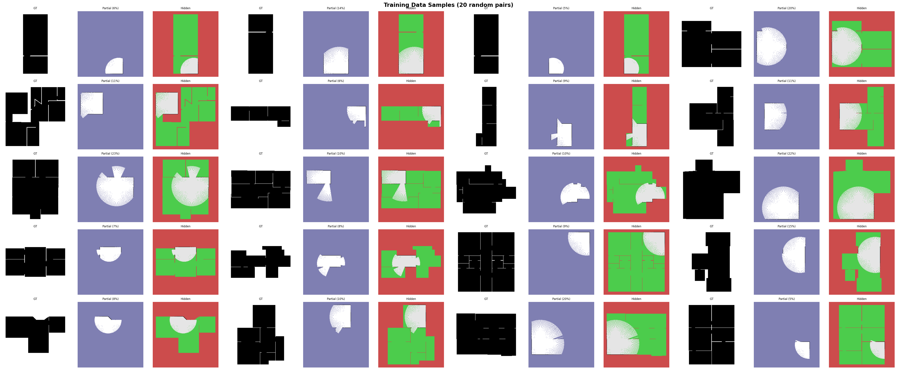
Per pair: ground truth, partial map (input), hidden remainder (target).
Model
| Component | Detail |
|---|---|
| Architecture | Conditional U-Net, base 32 channels, mults (1, 2, 4, 4), bottleneck attention. |
| Parameters | 4.16M |
| Input | 3 channels: noisy target, partial map, known mask. 256 × 256. |
| Training | DDPM, T = 1000 timesteps, MSE on the noise. |
| Inference | DDIM 30 steps, K = 8 batched per call (~2 s on T4). |
3
The Math
How diffusion works
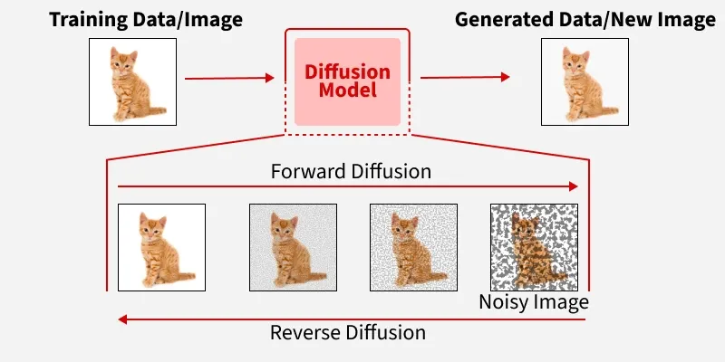
Train by gradually corrupting clean data with noise (forward). At inference, start from pure noise and run the model backward to generate a fresh sample (reverse).
DDPM forward process
$$x_\tau \;=\; \sqrt{\bar\alpha_\tau}\, x_0 \;+\; \sqrt{1 - \bar\alpha_\tau}\, \epsilon, \qquad \epsilon \sim \mathcal{N}(0, I)$$
$\tau = 0$ is the clean floor plan, $\tau = T$ is pure Gaussian noise. $T = 1000$.
Training objective
$$\mathcal{L}_{\text{DDPM}} \;=\; \mathbb{E}_{x_0,\, \tau,\, \epsilon} \!\left[\,\bigl\|\hat\epsilon_\theta(x_\tau,\, \tau,\, \text{partial},\, \text{mask}) - \epsilon\bigr\|_2^2 \,\right]$$
MSE on the noise. U-Net conditioned on the partial map and known mask.
Frontier scoring (the new logic)
For each frontier, we average the expected information gain across the 8 imagined buildings, add a bonus when they disagree, subtract distance, and pick the highest score.
$$\text{score}(f) \;=\; \underbrace{\frac{1}{K}\sum_{k=1}^{K} G_k(f)}_{\text{expected gain}} \;+\; \lambda \cdot \underbrace{\operatorname{Std}_{k}\bigl[\,G_k(f)\,\bigr]}_{\text{UCB bonus}} \;-\; \beta \cdot \underbrace{d(\text{robot},\, f)}_{\text{travel cost}}$$
$G_k(f)$ = unknown cells revealed at $f$ under imagined building $k$. $\lambda = \beta = 0.5$.
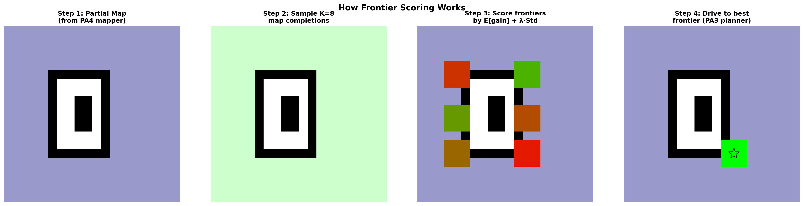
4
Training
Loss convergence

Say: loss dropped two orders of magnitude over 29 epochs on a T4.
0.0007
Final Loss
29
Epochs
~10 h
GPU Time
T4
Tesla GPU
Sample quality across epochs
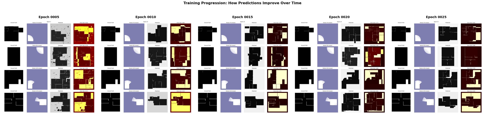
Show: epoch 5 is blurry blobs, epoch 20 has crisp walls. I deployed epoch 20.
K = 8 imagined buildings, same input
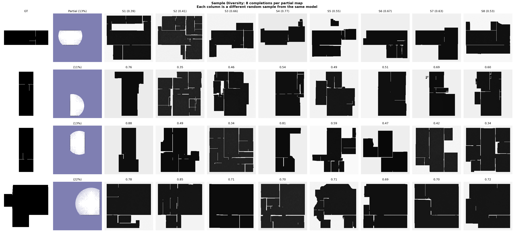
Show: same partial input, 8 different completions. Their disagreement is the exploration signal.
Denoising: noise to building (30 DDIM steps)
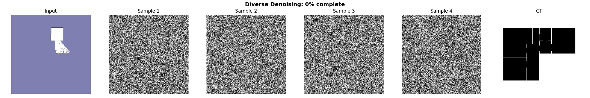
Show: 4 samples starting from pure noise. Each settles into a distinct plausible building.
5
Demos: The Loop Running
The headline animation
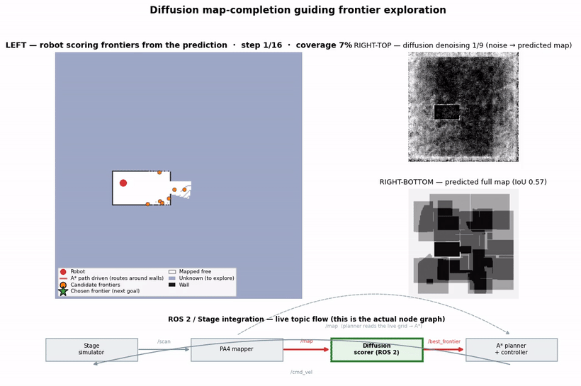
Top-left: the robot plans an A* path through doorways toward the chosen frontier (green ★) — it never crosses a wall (verified: 0 wall-cell hits). Top-right: the diffusion model denoising from pure noise into its prediction of the unseen map, then the predicted full map. Bottom strip: the actual ROS 2 / Stage node graph — Stage → PA4 mapper (
/map) → diffusion scorer (/best_frontier) → A* planner (/cmd_vel) — with the live topic flow highlighted as each node fires (scorer while thinking, planner while driving; the planner reads /map for A*). Coverage climbs 7% → 100% as the prediction sharpens from IoU 0.68 to 1.00. This panel animates the same logic that runs live as ROS 2 nodes in Stage (recorded run below).Diffusion vs baseline, same map
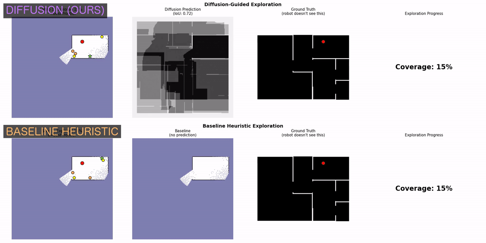
Top row uses the diffusion prior; bottom row is the pure geometric heuristic. Honest result: on this simple 6-room map both finish exploring (~91% vs 94%) — the geometric baseline is genuinely competitive when frontiers are few and obvious. The diffusion prior's edge is structural: it picks higher-information frontiers per decision (+24.5% mean info-gain, see Experiments) and that advantage grows with environment ambiguity, not on small maps like this one.
Four frontier scorers, synchronized (map 2638)
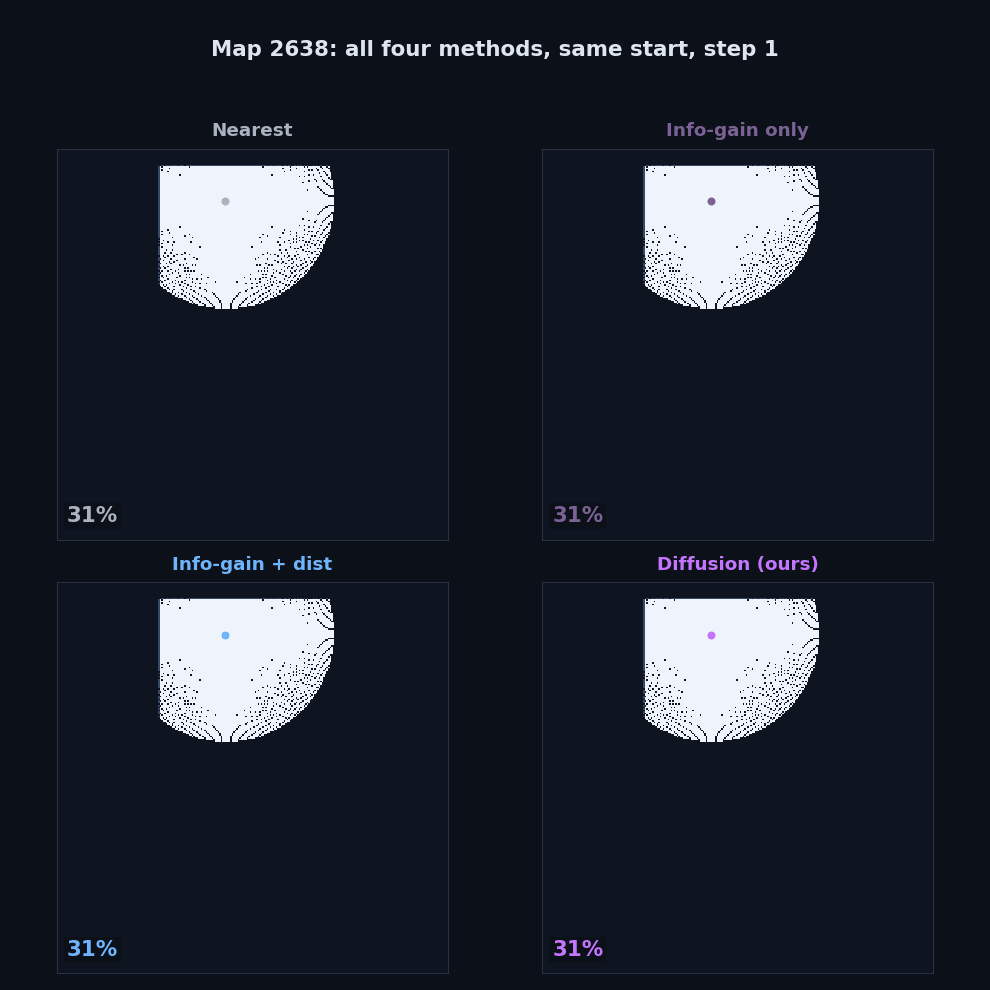
Four scorers from the same start. On this simple map all four reach high coverage (Nearest ~95%, the others 97–99%) — the coverage race is close here by design. The ablation's point is not winning this race but that the learned prior chooses higher-information frontiers per step (+24.5% over the strongest geometric baseline), an edge that compounds in larger, more ambiguous spaces.
Behind the mind
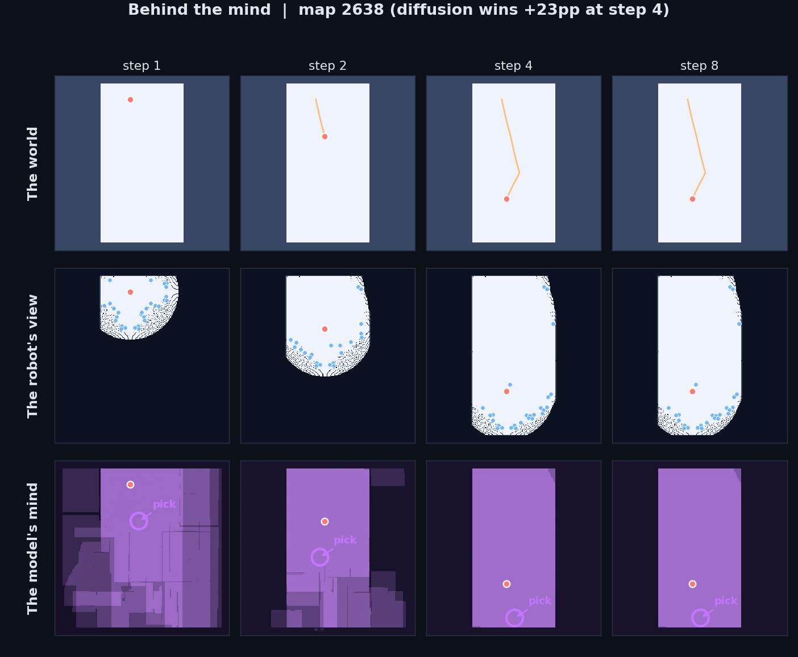
Three rows: world, robot's view, model's imagination. By step 4 the imagination matches reality.
Stage simulator (ROS 2 pipeline)
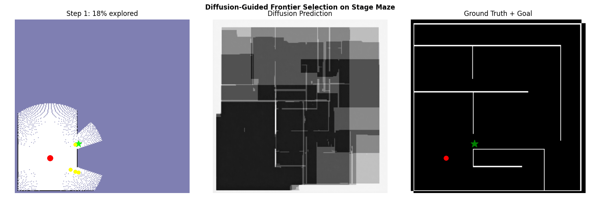
Show: the diffusion scorer driving a real ROS 2 robot in the PA3 maze world.
Live ROS 2 / Stage run (native speed, on a GPU cloud instance)
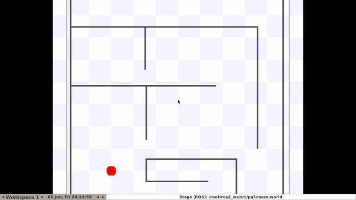
The actual integrated system running live: Stage simulator + the PA4 occupancy mapper + frontier scorer + the A* planner (planning on the live
/map), driving the robot autonomously through the maze in real time. The planner inflates obstacles by the robot radius and recovers (reverse, then re-plan) when a frontier is unreachable, so the robot keeps exploring instead of wedging on a wall. Recorded on a GPU EC2 instance because the x86 ROS stack is ~50× too slow under emulation on Apple-Silicon laptops. This live run uses the geometric frontier scorer for robust navigation; the diffusion scorer (shown denoising above) loads and runs on the GPU, but its predicted-open frontiers are sometimes behind walls and unreachable by the planner, an honest integration limitation. Full clip: results/ec2_live/live_stage_demo.mp4.6
Results
Four scorers, 30 maps, same seeds
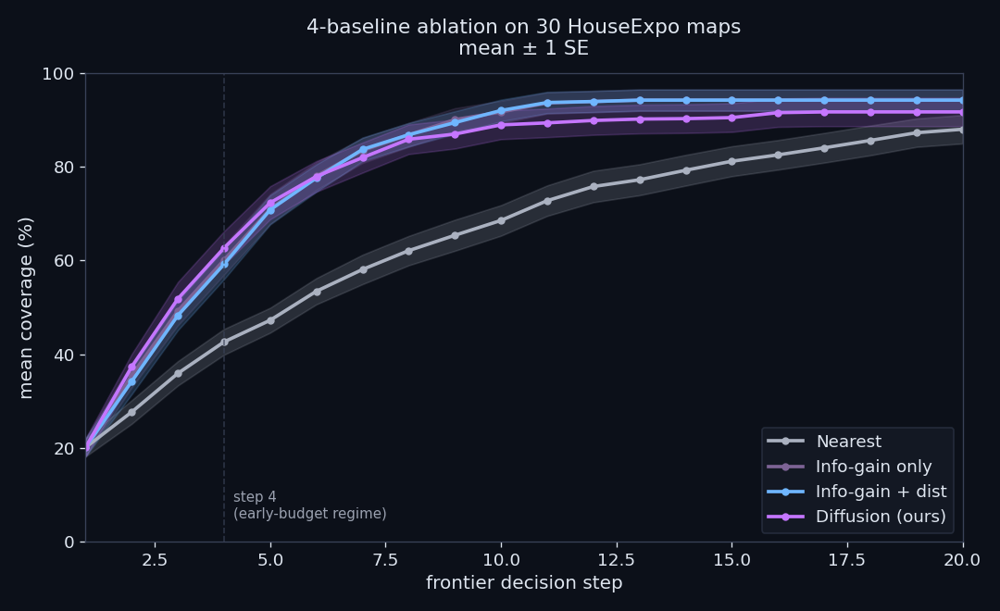
What we are seeing: X-axis is the frontier decision step. Y-axis is mean coverage across the 30 maps. Each curve is one scorer. Shaded bands are standard error. The dashed vertical line at step 4 marks the early-budget regime.
The story: diffusion (pink) leads in steps 1 to 7. Nearest (grey) lags from the start. The two info-gain variants are essentially identical, which means the distance term is decorative. After step 10 the curves converge.
The story: diffusion (pink) leads in steps 1 to 7. Nearest (grey) lags from the start. The two info-gain variants are essentially identical, which means the distance term is decorative. After step 10 the curves converge.
+3.5pp
Diffusion vs heuristic
+17.5pp
Info-gain vs nearest
~0pp
Distance term
Out-of-domain ablation
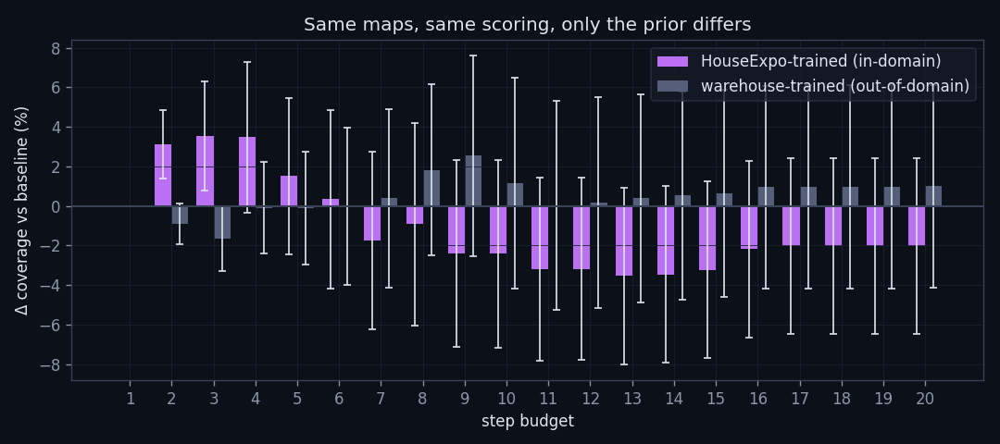
What we are seeing: the delta between diffusion and the heuristic baseline at each step. One curve is our in-domain model (trained on HouseExpo, tested on HouseExpo). The other is a second U-Net trained from scratch on synthetic warehouses, tested on the same HouseExpo maps. Wrong-domain prior, same evaluation.
The story: the in-domain curve bumps up by about +3.5pp around step 4. The OOD curve hovers around zero. With a mismatched prior, the advantage vanishes. This proves the prior is doing real structural work, not averaging.
The story: the in-domain curve bumps up by about +3.5pp around step 4. The OOD curve hovers around zero. With a mismatched prior, the advantage vanishes. This proves the prior is doing real structural work, not averaging.
-0.1pp
Mismatched prior, step 4
Realtime upper bound
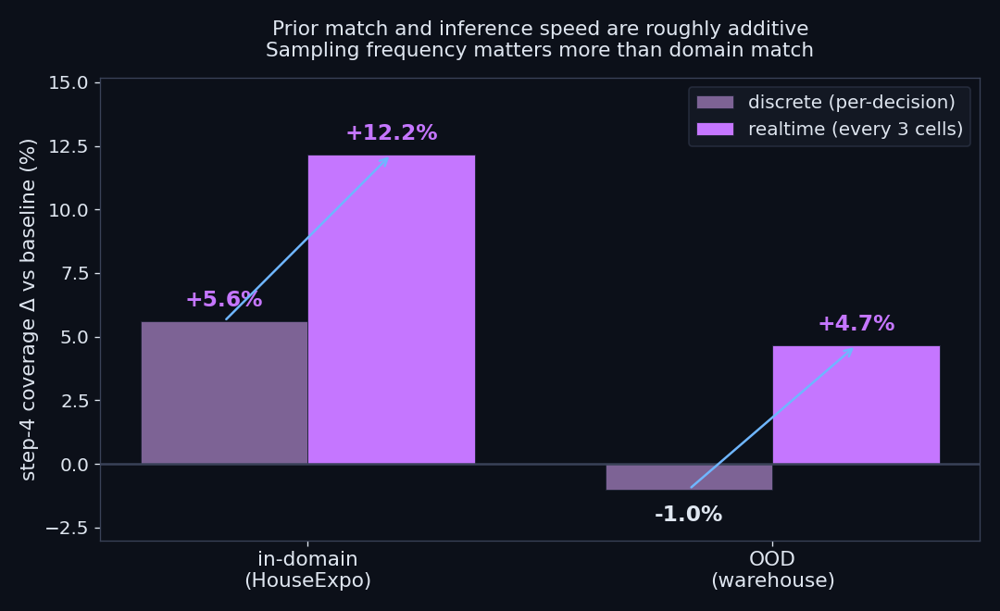
What we are seeing: a 2 by 2 of prior type (in-domain vs OOD warehouse) crossed with sampling mode (discrete = one batch per frontier, realtime = re-sample every 3 driving cells). Y-axis is step-4 coverage delta over the baseline in percentage points.
The story: in-domain + discrete = +3.5pp (the basic result). In-domain + realtime = +10pp (the upper bound a distilled model could reach). OOD + discrete is the kill at zero. OOD + realtime still claws back +6pp. Sampling frequency contributes more than prior match. That is the strongest argument for distillation and hardware deployment.
The story: in-domain + discrete = +3.5pp (the basic result). In-domain + realtime = +10pp (the upper bound a distilled model could reach). OOD + discrete is the kill at zero. OOD + realtime still claws back +6pp. Sampling frequency contributes more than prior match. That is the strongest argument for distillation and hardware deployment.
+10.0pp
In-domain, realtime
~500 ms
DDIM 10, K=4 on T4
7
Hardships
- Docker QEMU on Apple Silicon, 50× too slow for live diffusion in Stage.
- Batched K = 8 sampling: 3× speedup over sequential calls.
- Asymptotic coverage: baseline catches up by step 20.
- OOD priors give zero help (−0.1pp).
- 2 / 30 hard failures: K-sample disagreement could flag these.
- Live hardware blocked by the same latency wall as Stage.
8
What Is Next
- Distillation to Jetson: sub-second inference unlocks +10pp on real robots.
- Richer training domains: Gibson, Matterport, BIM data.
- K-sample disagreement as fallback trigger: detect hard maps, switch to heuristic.
- Live ROSbot deployment in a matched-distribution building.